The Solar System Is a Moving Family
The bedroom opened into a giant map of space.
“Everything is moving!” Dot said. Planets travel around the Sun, moons travel around planets, and asteroids and comets follow paths of their own.
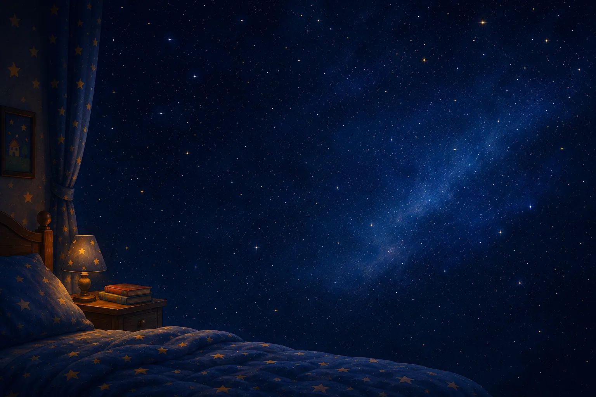
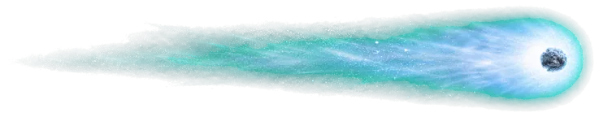
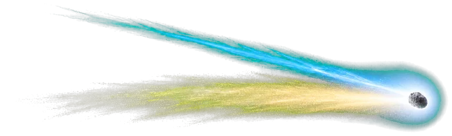
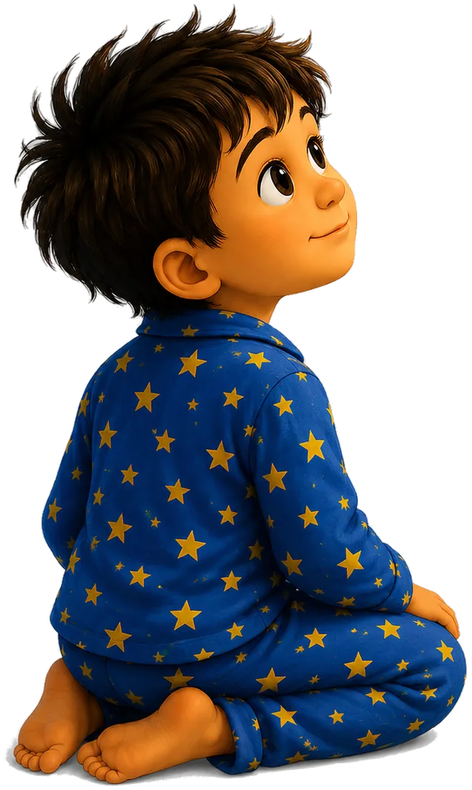
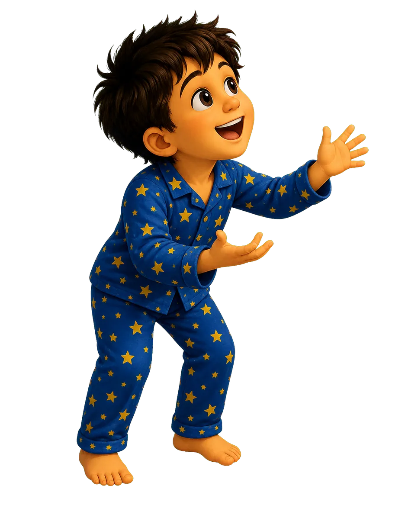
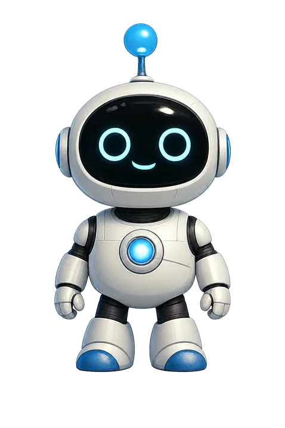
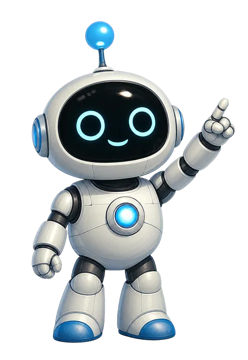
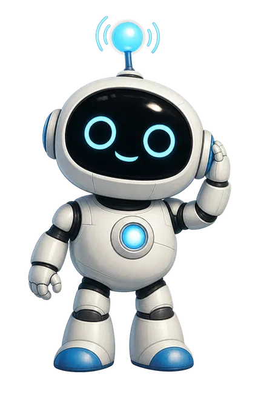
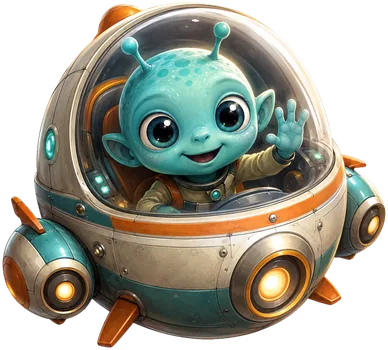
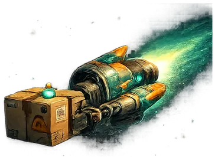
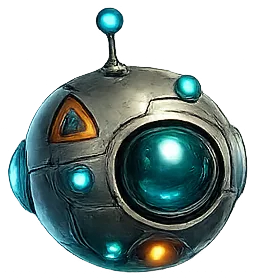
The bedroom opened into a giant map of space.
“Everything is moving!” Dot said. Planets travel around the Sun, moons travel around planets, and asteroids and comets follow paths of their own.